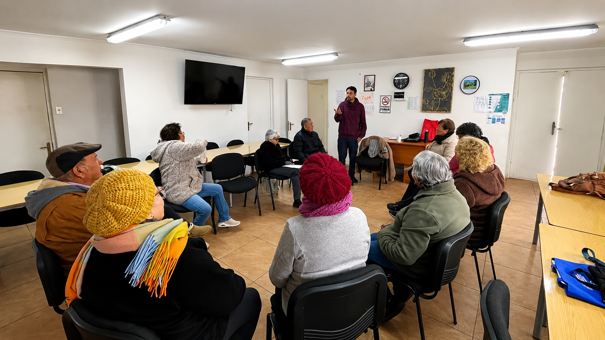

Galería



Arte, participación y transformación social a través de intervenciones escénicas en espacios públicos.
Conoce mi trabajoActor, director y facilitador especializado en Teatro Invisible. Mi trabajo explora la relación entre arte, comunidad y espacio público, desarrollando experiencias que promueven el diálogo, la reflexión crítica y la participación ciudadana.
Intervenciones escénicas en espacios públicos que invitan a reflexionar sobre problemáticas sociales.
Formación para organizaciones, universidades, agrupaciones y comunidades.
Procesos de investigación y desarrollo metodológico que integran Teatro Invisible, educación emocional y neurociencia aplicada para promover el bienestar, el aprendizaje socioemocional y la participación comunitaria.

Conversación sobre Teatro Invisible, participación comunitaria y arte social.
Presentación de experiencias en encuentros latinoamericanos de artes escénicas.
Artículos y reflexiones sobre metodologías participativas y transformación social.
correo@ejemplo.cl
Instagram: @teatroinvisible
WhatsApp: +56 9 1234 5678